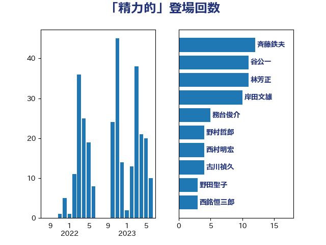

単語「精力的」

| 斉藤鉄夫 | 公明党 | 12 回 |
| 谷公一 | 自由民主党 | 11 回 |
| 林芳正 | 自由民主党 | 11 回 |
| 岸田文雄 | 自由民主党 | 10 回 |
| 務台俊介 | 自由民主党 | 5 回 |
| 野村哲郎 | 自由民主党 | 4 回 |
| 西村明宏 | 自由民主党 | 4 回 |
| 古川禎久 | 自由民主党 | 4 回 |
| 野田聖子 | 自由民主党 | 3 回 |
| 西銘恒三郎 | 自由民主党 | 3 回 |
| 末松信介 | 自由民主党 | 3 回 |
| 小川淳也 | 立憲民主党 | 3 回 |
| 小倉將信 | 自由民主党 | 3 回 |
| 安江伸夫 | 公明党 | 3 回 |
| 吉良よし子 | 日本共産党 | 3 回 |
| 加藤勝信 | 自由民主党 | 3 回 |
| 齋藤健 | 自由民主党 | 2 回 |
| 馬場伸幸 | 日本維新の会 | 2 回 |
| 門山宏哲 | 自由民主党 | 2 回 |
| 金子恭之 | 自由民主党 | 2 回 |
| 道下大樹 | 立憲民主党 | 2 回 |
| 萩生田光一 | 自由民主党 | 2 回 |
| 舟山康江 | 国民民主党 | 2 回 |
| 竹内真二 | 公明党 | 2 回 |
| 石川博崇 | 公明党 | 2 回 |
| 渡辺周 | 立憲民主党 | 2 回 |
| 浜田靖一 | 自由民主党 | 2 回 |
| 津島淳 | 自由民主党 | 2 回 |
| 梅谷守 | 立憲民主党 | 2 回 |
| 松野博一 | 自由民主党 | 2 回 |
| 松本剛明 | 自由民主党 | 2 回 |
| 松山政司 | 自由民主党 | 2 回 |
| 本庄知史 | 立憲民主党 | 2 回 |
| 有村治子 | 自由民主党 | 2 回 |
| 徳永久志 | 無所属 | 2 回 |
| 平木大作 | 公明党 | 2 回 |
| 山田賢司 | 自由民主党 | 2 回 |
| 山東昭子 | 自由民主党 | 2 回 |
| 山井和則 | 立憲民主党 | 2 回 |
| 山下芳生 | 日本共産党 | 2 回 |
| 宮崎政久 | 自由民主党 | 2 回 |
| 大口善徳 | 公明党 | 2 回 |
| 堀井巌 | 自由民主党 | 2 回 |
| 城内実 | 自由民主党 | 2 回 |
| 北側一雄 | 公明党 | 2 回 |
| 上田英俊 | 自由民主党 | 2 回 |
| 上杉謙太郎 | 自由民主党 | 2 回 |
| 上川陽子 | 自由民主党 | 2 回 |
| 鬼木誠 | 立憲民主党 | 1 回 |
| 高木陽介 | 公明党 | 1 回 |
| 高市早苗 | 自由民主党 | 1 回 |
| 青柳仁士 | 日本維新の会 | 1 回 |
| 青木愛 | 立憲民主党 | 1 回 |
| 階猛 | 立憲民主党 | 1 回 |
| 長坂康正 | 自由民主党 | 1 回 |
| 長友慎治 | 国民民主党 | 1 回 |
| 鈴木俊一 | 自由民主党 | 1 回 |
| 金子恵美 | 立憲民主党 | 1 回 |
| 野中厚 | 自由民主党 | 1 回 |
| 里見隆治 | 公明党 | 1 回 |
| 進藤金日子 | 自由民主党 | 1 回 |
| 足立敏之 | 自由民主党 | 1 回 |
| 赤澤亮正 | 自由民主党 | 1 回 |
| 赤池誠章 | 自由民主党 | 1 回 |
| 豊田俊郎 | 自由民主党 | 1 回 |
| 角田秀穂 | 公明党 | 1 回 |
| 西田実仁 | 公明党 | 1 回 |
| 西村智奈美 | 立憲民主党 | 1 回 |
| 西村康稔 | 自由民主党 | 1 回 |
| 西岡秀子 | 国民民主党 | 1 回 |
| 若松謙維 | 公明党 | 1 回 |
| 若宮健嗣 | 自由民主党 | 1 回 |
| 自見はなこ | 自由民主党 | 1 回 |
| 篠原孝 | 立憲民主党 | 1 回 |
| 竹谷とし子 | 公明党 | 1 回 |
| 空本誠喜 | 日本維新の会 | 1 回 |
| 石井正弘 | 自由民主党 | 1 回 |
| 渡辺博道 | 自由民主党 | 1 回 |
| 浦野靖人 | 日本維新の会 | 1 回 |
| 浜野喜史 | 国民民主党 | 1 回 |
| 浜田聡 | NHK党 | 1 回 |
| 浜口誠 | 国民民主党 | 1 回 |
| 浅野哲 | 国民民主党 | 1 回 |
| 泉健太 | 立憲民主党 | 1 回 |
| 河野義博 | 公明党 | 1 回 |
| 河野太郎 | 自由民主党 | 1 回 |
| 河西宏一 | 公明党 | 1 回 |
| 池田佳隆 | 自由民主党 | 1 回 |
| 江島潔 | 自由民主党 | 1 回 |
| 森屋隆 | 立憲民主党 | 1 回 |
| 柴田巧 | 日本維新の会 | 1 回 |
| 柳本顕 | 自由民主党 | 1 回 |
| 木原誠二 | 自由民主党 | 1 回 |
| 新藤義孝 | 自由民主党 | 1 回 |
| 新妻秀規 | 公明党 | 1 回 |
| 打越さく良 | 立憲民主党 | 1 回 |
| 平沼正二郎 | 自由民主党 | 1 回 |
| 平林晃 | 公明党 | 1 回 |
| 平口洋 | 自由民主党 | 1 回 |
| 川田龍平 | 立憲民主党 | 1 回 |
| 島尻安伊子 | 自由民主党 | 1 回 |
| 岸真紀子 | 立憲民主党 | 1 回 |
| 岩谷良平 | 日本維新の会 | 1 回 |
| 岩田和親 | 自由民主党 | 1 回 |
| 岡田直樹 | 自由民主党 | 1 回 |
| 山本順三 | 自由民主党 | 1 回 |
| 山本博司 | 公明党 | 1 回 |
| 山口俊一 | 自由民主党 | 1 回 |
| 尾辻秀久 | 無所属 | 1 回 |
| 小森卓郎 | 自由民主党 | 1 回 |
| 小林鷹之 | 自由民主党 | 1 回 |
| 小島敏文 | 自由民主党 | 1 回 |
| 小山展弘 | 立憲民主党 | 1 回 |
| 小宮山泰子 | 立憲民主党 | 1 回 |
| 宮崎雅夫 | 自由民主党 | 1 回 |
| 奥野総一郎 | 立憲民主党 | 1 回 |
| 大塚耕平 | 国民民主党 | 1 回 |
| 國重徹 | 公明党 | 1 回 |
| 国定勇人 | 自由民主党 | 1 回 |
| 吉田統彦 | 立憲民主党 | 1 回 |
| 吉田宣弘 | 公明党 | 1 回 |
| 古川直季 | 自由民主党 | 1 回 |
| 古川康 | 自由民主党 | 1 回 |
| 古屋範子 | 公明党 | 1 回 |
| 勝部賢志 | 立憲民主党 | 1 回 |
| 冨樫博之 | 自由民主党 | 1 回 |
| 佐々木さやか | 公明党 | 1 回 |
| 井上信治 | 自由民主党 | 1 回 |
| 中川康洋 | 公明党 | 1 回 |
| 中山展宏 | 自由民主党 | 1 回 |
| 中司宏 | 日本維新の会 | 1 回 |
| 世耕弘成 | 自由民主党 | 1 回 |
| 上野賢一郎 | 自由民主党 | 1 回 |
| 上田勇 | 公明党 | 1 回 |
| 三浦信祐 | 公明党 | 1 回 |
| こやり隆史 | 自由民主党 | 1 回 |